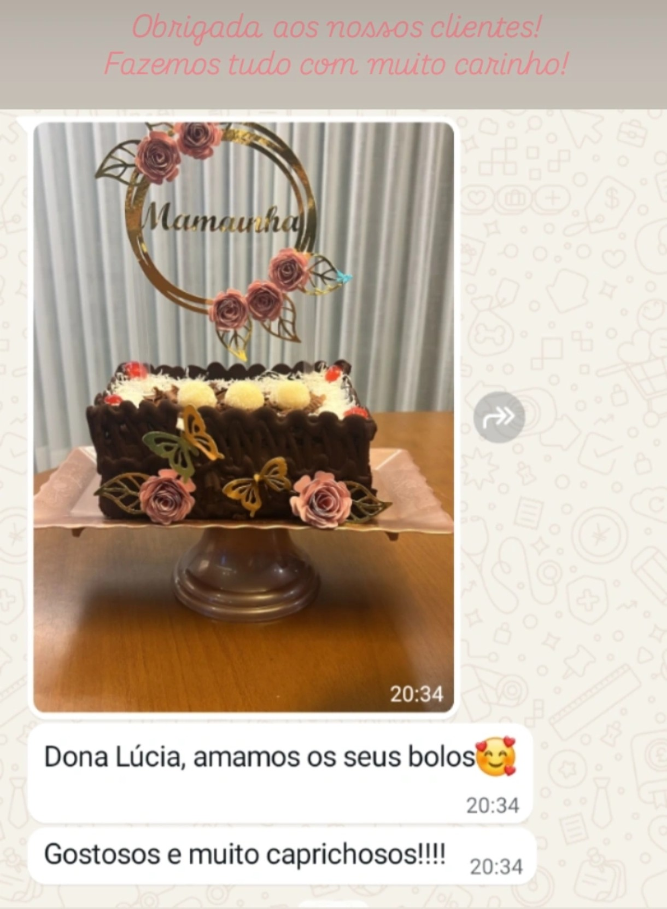

Algumas avaliações reais de clientes no Google Maps.
⭐⭐⭐⭐⭐
“Realizo a compra de bolos já alguns anos, agora estou comprando os kits de merversario, só elogios, todo o kit e decoração é tudo feito com muito capricho.”
– Jessica Araujo
⭐⭐⭐⭐⭐
“Começamos à comprar da d. Lúcia, bem lá no início. Na verdade compravámos até por pedaço, pq como sou vizinha. O pessoal vinha jogar baralho na garagem da casa dos meus pais e aí proveitavámos e comprávamos dos bolos e tortas de morango tb.... Sempre muito caprichosa..”
– Lia Pires
⭐⭐⭐⭐⭐
“Já encomendei bolos e salgados várias vezes para as festas dos meus filhos e sempre sou atendido com o melhor padrão de qualidade! Super recomendo!”
– Cesar Augusto Arakaki
⭐⭐⭐⭐⭐
“Encomendamos os bolos da dona Lúcia há 10 anos ou mais, não há bolos e doces melhor, a família inteira ama, não trocamos por nada.”
– Carla Godoy
Mensagens reais de clientes (dados sensíveis ocultados).
